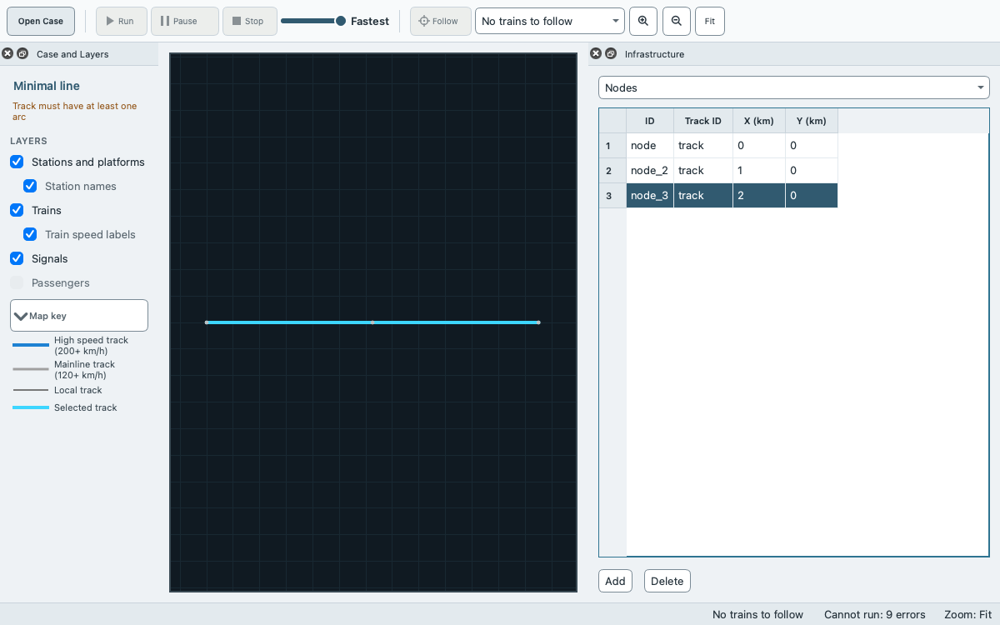
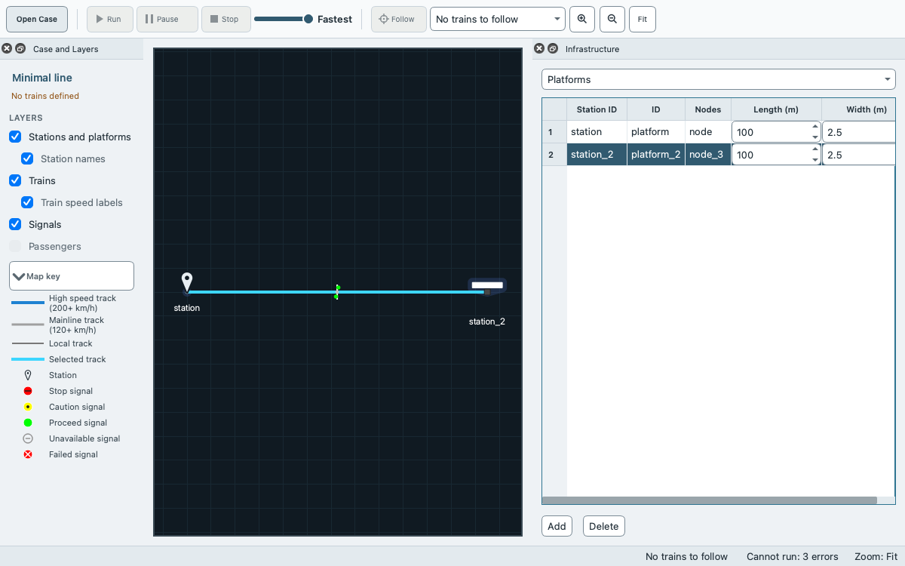
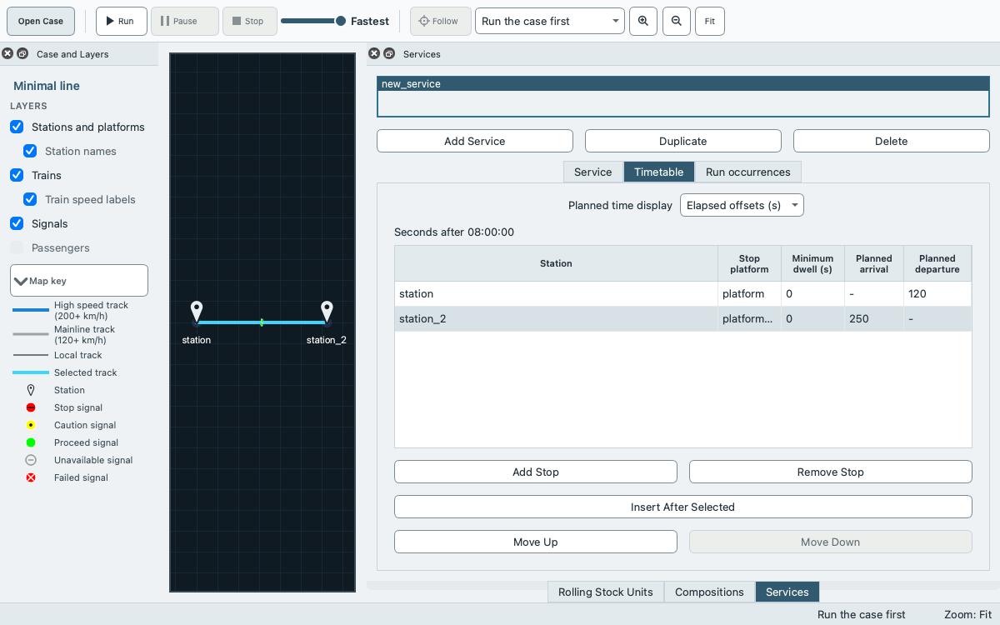

Tutorial: the smallest useful scene¶
This tutorial builds a complete case study from nothing with the editors of EGTRAIN, runs it, saves it as a folder and as a bundle, and opens it again. The case has one track of 2 km, a station at each end and one train that runs from one station to the other.
You need EGTRAIN running, and you should have done Getting started once. To change a case that already exists, see Tutorial: modify a supplied case. The words case study, scene, bundle and validation are in the glossary.
What the editors do not do¶
The editors are tables, lists and dialogs. They are not a drawing tool: there is no drag-and-drop track drawing, route painting or automatic signal placement. Numbers are typed into cells. For anything larger than this tutorial, or for many similar rows, the supported route is JSON: save the case as a folder, edit the files, and validate them with scene_tool (editing examples, command-line tools). The window has no JSON text editor.
What you build¶
Part |
Value |
|---|---|
Track |
one, with 3 nodes at 0, 1 and 2 km, 2 arcs and 2 blocks of 1 km |
Stations |
two, each with one platform at an end node |
Signalling |
one signalling area of the whole track, system |
Route |
the 2 blocks in order |
Rolling stock |
one unit and one composition that holds it |
Service |
one, with 2 stops: departure at 120 s from the first station, arrival at 250 s at the second |
Every row below keeps the identifier that the editor proposes (track, node, node_2, and so on). An identifier is only a name, but it must be unique, and the names in this tutorial are the ones you will see in the lists.
1. Create the case¶
Choose File > New Case Study… (Ctrl+N or Cmd+N). The docks Case Settings and Infrastructure open as tabs on the right, with Infrastructure in front. If you have unsaved changes, EGTRAIN asks first.
Click the tab Case Settings and replace Name (
Untitled Case Study) withMinimal lineand press Enter. Leave Base time at08:00:00, Duration / horizon (s) at 3600, Buffer (s) at 0 and Recovery (%) at 0.
A new case holds one scenario, baseline, and nothing else. Run stays disabled while validation reports errors for the railway data that is still missing, such as “Runnable scene has no tracks”. The status bar counts them (“Not ready: N validation error(s) must be fixed”) and the title bar shows the mark for unsaved changes.
2. Infrastructure, in dependency order¶
Everything in this part happens in the dock Infrastructure; click its tab. The list Entity chooses the table. Add and Delete are under the table. Add appends a row with proposed values, and a cell is edited by clicking it, typing and pressing Enter. While a table is empty, a line of text above it says what to add first, for example “No nodes yet. Add a track first, then add nodes on it.” Each table refers to the ones before it, so build in this order. A row that other rows refer to cannot be deleted while they do.
Tracks. Choose Add. The track is
track.Nodes. Choose Add three times. The nodes
node,node_2andnode_3go on the first track, at X (km) 0, 1 and 2 and Y (km) 0. The proposed positions are the ones you want.
Arcs. Choose Add twice. The arcs
arc(fromnodetonode_2) andarc_2(fromnode_2tonode_3) join the nodes in order. They get a Curvature radius (m) of 0, a Gradient (rise/length) of 0 and a Speed limit (m/s) of 20, which you keep.Blocks. The blocks have a filter above the table that names a track; choose
track. Choose Add twice. The blocksblockandblock_2are 1 km long each, so together they cover the 2 km of the track.Stations. Choose Add twice. The stations are
stationandstation_2, and each is named after its identifier.Platforms. Choose Add twice. Both platforms (
platformandplatform_2) start at the first station. In the second row, set Station ID tostation_2. Then set Nodes, a comma-separated list of nodes:nodefor the first row andnode_3for the second, so that each platform is at the end node of the track. Leave Length (m) and Width (m) at their proposed values.
Signalling area. Choose Add. The area
signalling-areacovers Start km 0 to End km 2 and applies to all tracks. In the column Signalling system, choose0 ATB fixed block. An area without a system is an error. Without any area the case still runs, and validation only warns that the sections run without signalling. What the level means is in Signalling levels, and it is the level that the committed Paimpol case uses.Routes. Choose Add. The route is
route, and it is selected. Below the table, choosebase block block / track trackin Section catalog and choose Add Section; then choosebase block block_2 / track trackand Add Section again. The list of sections shows both in this order. Leave Has corridor and Reversed as they are.
The tables Connections (joins between two nodes), Signals, Block dependencies, Single-track restrictions and Station boundaries stay empty. A single track needs none of them, and the committed Paimpol case has no signals either.
3. A rolling stock unit¶
Open Editors > Rolling stock units and choose Add Unit. The unit is new_train_unit. A run needs physical values and a traction curve. This tutorial does not make up railway data: it copies the placeholder unit SLT_Sprinter of the case Assignment_Gvc_Gdg_Ut, the stock that its own documentation calls a placeholder. Treat it as a stand-in, not as data of a real train.
On the tab Physical, enter these values, pressing Enter after each:
Field |
Value |
|---|---|
Traction-unit mass (kg) |
151000 |
Wagon mass (kg) |
0 |
Wagon count |
0 |
Maximum speed (m/s) |
36.111111111111 |
Maximum deceleration (m/s²) |
0.75 |
Frontal area (m²) |
1.45 |
Resistance coefficient |
0.004 |
Jerk (m/s³) |
0.75 |
Length (m) |
70 |
On the tab Traction, choose Add Traction Row twice and fill the columns Lower speed (m/s), Upper speed (m/s), C0, C1 and C2: click a cell, type the number and press Enter. The force in N at speed v is C0 + C1 v + C2 v².
Row |
Lower speed |
Upper speed |
C0 |
C1 |
C2 |
|---|---|---|---|---|---|
1 |
0 |
8.611111111111 |
209000 |
0 |
0 |
2 |
8.611111111111 |
36.111111111111 |
324607.2915 |
-17671.4923 |
292.9005 |
A field or cell that you are not editing can show a number rounded, for example 36.1111; the full value is kept, and it shows when you click the field or double-click the cell. The speed intervals must not overlap and must run in order. The source references and the links to files are optional and stay empty.
4. A composition¶
Open Editors > Compositions and choose Add Composition. The composition is new_composition. Choose Add Unit under Rolling stock units (in order), choose new_train_unit in the dialog Add Rolling Stock Unit, and confirm. The list holds the unit.
5. A service with two stops¶
Open Editors > Services and choose Add Service. The service is
new_service. On the tab Service, set Composition tonew_compositionand Route toroute. Leave the other fields as they are. A service without an Entry Time (s) enters at the planned departure of its first stop.Open the tab Timetable and choose Add Stop. In the dialog Add timetable stop, leave Insert position as proposed, and check that Station is
stationand Compatible platform isplatform. Tick Planned departure and enter120. Leave Planned arrival unticked and Minimum dwell (s) at 0, and choose OK. A blank planned time means that there is none, and the first stop has no arrival.Choose Add Stop again. Leave Insert position at the proposed place after stop 1, and set Station to
station_2and Compatible platform toplatform_2. Tick Planned arrival and enter250. Leave the departure unticked, because the train ends its service here, and choose OK.
The planned times are seconds after the base time of the case, 08:00:00 (Planned time display is Elapsed offsets (s)). The table shows both stops in order. Cancel in the dialog leaves the table unchanged.
6. Validate¶
Choose View > Scene Validation (Ctrl+Shift+V). The table is empty: the case has no error, warning or information. The dock Case and Layers shows “Ready to run” and Run is enabled. If an error is left, its message names the part to fix, and the status bar counts the errors while the case is incomplete: “Not ready: N validation error(s) must be fixed”. Follow the message, usually a missing reference such as a route without sections or a service without a composition.
7. Run¶
Choose Run, check the dialog Run simulation (Selected in period 1, Active incidents 0) and choose its button Run simulation. The train leaves station and stops at station_2. When the status bar reads “Simulation complete”, the dock Run Results lists the train. In Open result view… > Timetable, the arrival at station_2 should be 8 seconds early: a run of the saved folder without a window, as in section 10, put the arrival at 242 s after the base time in TrainTrajectories/TimetablePoints.txt of the output folder, and the plan says 250 s. The number was not read from the window. The row of station has no arrival to compare: it has no planned arrival, and the train begins its route there (how delays are calculated).
8. Save as a folder and as a bundle¶
Choose File > Save Scene As Folder…. In the dialog Save Scene As Folder, make or choose an empty folder
minimal-lineand confirm. The folder holdsscene.json,infrastructure.json,stations.json,signalling.json,rolling_stock.json,services.jsonandscenarios.json(files of a scene).Choose File > Save Case Study As…. In the dialog Save Case Study As, name the file
minimal-line.egsceneand save it. Type the extension too: the folderminimal-lineof step 1 has the same name without it, and the dialog can open that folder instead of saving. After this, File > Save Scene writes to this bundle.
Both are now listed under File > Recent Scenes.
9. Reopen and confirm¶
Choose File > Open Scene Folder…, choose the folder
minimal-line, and check the Infrastructure, Services and Rolling stock units against the sections above. The title bar readsEGTRAIN - Minimal line.Choose File > Recent Scenes and the entry
minimal-linefor the bundle (the folder is listed asMinimal line). The case is the same, and Run completes with the same arrival.
10. Check the saved scene outside the window¶
scene_tool reads the folder and the bundle (command-line tools). The programs are not on the search path. Use their full paths. In the macOS app they are /Applications/QEGTRAIN.app/Contents/MacOS/scene_tool and /Applications/QEGTRAIN.app/Contents/MacOS/QEGTRAIN. In the Windows installation or the unzipped portable folder they are scene_tool.exe and QEGTRAIN.exe next to each other. In a build from source, run from EGTRAIN/QEGTRAIN and use ../../build/scene_tool and ../../build/QEGTRAIN.app/Contents/MacOS/QEGTRAIN (on Linux ../../build/QEGTRAIN). With the macOS app and the folder and bundle in the current folder:
APP=/Applications/QEGTRAIN.app/Contents/MacOS
"$APP/scene_tool" validate --runnable minimal-line
"$APP/scene_tool" validate --runnable minimal-line.egscene
"$APP/QEGTRAIN" --scene minimal-line.egscene -g 0
The two validate commands print nothing for a case without diagnostics and exit with 0. The last command runs the case without a window and ends with the line End of Simulation; its output files are in the folder Minimal line of the output folder.
Limits and the JSON route¶
The tutorial case uses no connections, signals, dependencies, restrictions or station boundaries. They are edited in the same dock, and their columns are listed in editing examples.
A platform length and width that you do not enter are the defaults of the application (100 m and 2.5 m).
The case has no passengers. The dock Passengers and the import of the DAS and RouteChoice files are described in Editing and validating a case.
The unit is a placeholder. For real rolling stock, enter its values, or link a parameter file and a traction file with the buttons on the two tabs. A link lasts for the session; the values that it applies are saved in
rolling_stock.json(main window).The same case as JSON is the folder you saved in step 8. Changing a value there and running
scene_tool validate --runnableis the way to check a bulk edit before you open it.The creator acceptance smoke test,
tools/e2e/creator_acceptance_smoke.sh, builds a larger case through the same controls and runs it, which is the automated proof of this path.
If something does not work¶
Add is disabled in Blocks, and the text above the table reads “No blocks yet. Add a track first, then add blocks on it.”: add a track first. With a track, the filter above the table names it and Add works.
Add in Platforms leaves the table as it is and the status bar reads “Add a station before adding a platform”: add the stations first.
Add Stop shows the message “No reachable stop: No station visit is available between any of the current stops. Check the route and stop order before adding a stop.”: the route has no sections, or the platform nodes are not on the route. Check the tables Routes and Platforms.
A refused edit says “Infrastructure IDs must be non-empty and unique”: choose another name.
Run is disabled: the dock Case and Layers names the first error, and the dock Scene Validation lists all of them.